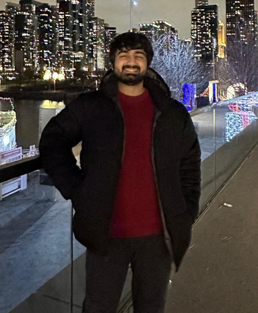

<!DOCTYPE html>
<html>

<head>
</style>
<!-- Google tag (gtag.js) -->
<script async src="https://www.googletagmanager.com/gtag/js?id=G-498EDDQ7VM"></script>
<script>
window.dataLayer = window.dataLayer || [];
function gtag(){dataLayer.push(arguments);}
gtag('js', new Date());

gtag('config', 'G-498EDDQ7VM');
</script>
    <title>Muhammad Muzammil</title>
    <style>
        body {
            font-family: Arial, sans-serif;
            margin: 0;
            padding: 20px;
            background-color: #f0f0f0; /* Example color: light gray */
       
        }

        h1 {
            margin-top: 0;
        }

        #content {
            max-width: 800px;
            margin: 0 auto;
        }

        img {
            float: right;
            padding-left: 20px;
            padding-bottom: 10px;
        }
        .award {
            font-weight: bold;
            color: red;
        }
        p {
            margin-bottom: 20px;
        }

        ul {
            margin-bottom: 20px;
        }

        li {
            margin-bottom: 10px;
        }

        a {
            color: #0066cc;
            text-decoration: none;
        }

        a:hover {
            text-decoration: underline;
        }

        #footer {
            margin-top: 40px;
            border-top: 1px solid #ccc;
            padding-top: 10px;
            font-size: 12px;
            color: #666;
        }
        .icon-container {
            display: inline-block;
            vertical-align: middle;
            margin-right: -20px;
        }

        .icon-container img {
            
        }

        .paper-title {
            color: #2a9d8f; /* Teal color for the title */
            font-weight: bold;
        }
        .paper-title a {
            color: #2a9d8f; /* Ensure links in title have the same color */
            text-decoration: none; /* Remove underline from links */
        }
        .paper-title a:hover {
            text-decoration: underline; /* Underline on hover */
        }
        .authors {
            color: #e76f51; /* Red-orange color for the authors */
            font-style: italic;
        }
        .details {
            color: #264653; /* Dark blue color for the publication details */
        }
    
    
</head>

<body>
    <div id="content">
        <h1>Muhammad Muzammil <span style="font-weight: normal;"></span>
            

                <span class="icon-container">
                <a href="https://scholar.google.com/citations?user=r2KdqeMAAAAJ&hl=en" target="_blank"></a>
            </span>
            <span class="icon-container">
                <a href="https://www.linkedin.com/in/m-uzammil/" target="_blank"></a>
            </span>
        </h1>

        <p>
            I am currently a third-year Ph.D. canditate advised by Professor <a href="https://www.securitee.org/">Nick Nikiforakis in the Pragsec Lab</a> at Stony Brook University. I study the security and privacy issues related to Web3 technologies through conducting large scale studies.

            Before my Ph.D, I attended the Lahore University of Management Sciences for my bachelors in Computer Science.
        </p>

        <p align = "justify">
            Here is my <a href ="cv.pdf">CV</a>.
        </p>
        

        <h2>Publications</h2>
        <ul>
            <li>
                <p>
                    <span class="paper-title"><a href="imc24.pdf">Panning for gold.eth:
                        Understanding and Analyzing ENS Domain Dropcatching</a></span><br>
                    <span class="authors"><strong>Muhammad Muzammil</strong>, Zhengyu Wu, Aruna Balasubramanian, and Nick Nikiforakis</span><br>
                    <span class="details">Internet Measurement Conference (IMC). Madrid, Spain. 2024
                    </span>
                </p>
            </li>
            <li>
                <p>
                    <span class="paper-title"><a href = "">Typosquatting 3.0: Characterizing Squatting in Blockchain Naming Systems</a></span> <br>
                    <span class="authors"><strong>Muhammad Muzammil</strong>, ZhengYu Wu, Lalith Harisha, Brian Kondracki, and Nick Nikiforakis
                    </span><br>
                    <span class="details">Symposium on Electronic Crime Research (eCrime). Boston, MA, USA. 2024.</span>
                    <span class="award">Awarded Bronze Medal 🥉</span>
                </p>

            </li>
            <li>
                
                <p>
                    <span class="paper-title"><a href="https://www.csl.sri.com/users/gehani/papers/ESORICS-2023.Debloat.pdf">SoK: A Tale of Reduction, Security and Correctness - Evaluating Program Debloating Paradigms and Their Compositions</a></span><br>
                    <span class="authors">Muaz Ali, <strong>Muhammad Muzammil</strong>, Faraz Karim, Ayesha Naeem, Rukhshan Haroon, Muhammad Haris, Huzaifa Nadeem, Waseem Sabir, Fahad Shaon, Fareed Zaffar, Vinod Yegneswaran, Ashish Gehani and Sazzadur Rahaman</span><br>
                    <span class="details">European Symposium on Research in Computer Security (ESORICS). Hague, Netherlands. 2023.</span><br>
                </p>
            </li>
        </ul>

        

        <h2>Contact</h2>
        <p>Email: mmuzammil [AT] cs.stonybrook.edu</p>
        <p>Office: Room # 344, New Computer Science Building, Stony Brook, NY 11790. </p>
    </div>
    <div id="footer">
        <p>Last updated: September, 2024.</p>
    </div>


</body>

</html>